beginning of header
hero-header
ABOUT US
About TRAA
In the spring of 1986 the TRAA was formed by anglers concerned with the state of the fishery in the Thames River watershed, particularly the dwindling smallmouth bass population in the North Thames River.
The TRAA is not a fishing club, although most members are anglers and share fishing as a common interest. We are a "hands on" environmental group who likes to work at a grass roots level.
The TRAA is a volunteer organization, governed by a formal constitution and by-laws. An elected Executive, with the guidence of the General Membership, sets the policies and direction for the TRAA.
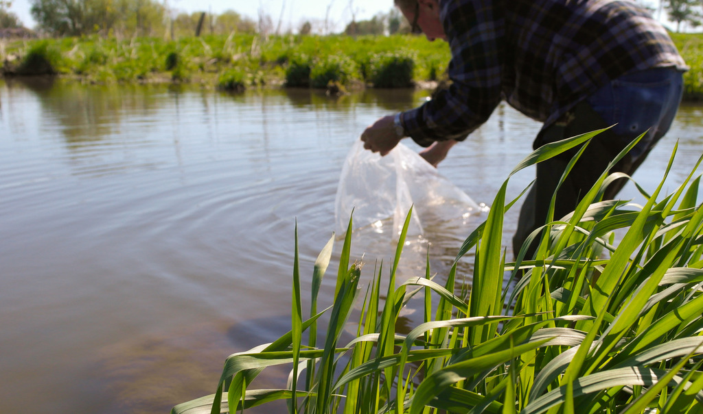
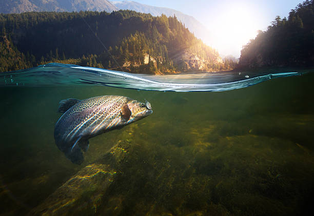
TRAA Executives
President
Rob Huber
Vice President
Paul Holmes
Secretary
Jeremy Beaton
Treasurer
Randy Bailey
Chairperson
Adam Bengen
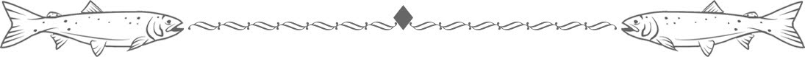
Volunteer Committee Chairs
Trout
Dan
Schinkelshoek
Warmwater
Pud Hunter
Habitat
Jeremy Beaton
Paul Holmes
Randy Bailey
Paul Holmes
Randy Bailey
Public Relations
Rob Huber
Randy Bailey
Paul Noble
Hatchery Management
Adam Bengen
Randy Bailey
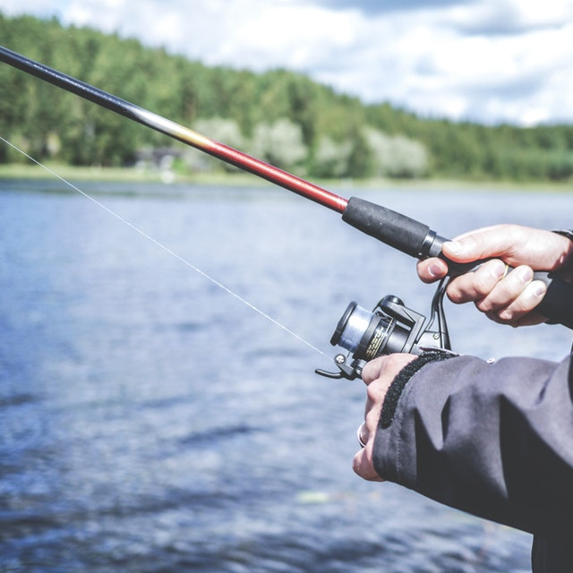
protect, enhance and regenerate a viable, multi-species, year-round fishery.
promote and participate in environmental clean-up, pollution control and rehabilitation.
breed, relocate and stock to re-establish or augment appropriate species of fish.
promote environmentally sound sport fishing practices.
form partnerships with community businesses, government agencies, special interest groups, landowners, and other stakeholders in the Thames River watershed.
increase public awareness of the unique diversity of the Thames River Watershed, its challenges, its recreational opportunities and its vital importance to our community.
Objectives
The TRAA Works at a Grassroots Level Within the Thames River Watershed to:
TRAA Gallery
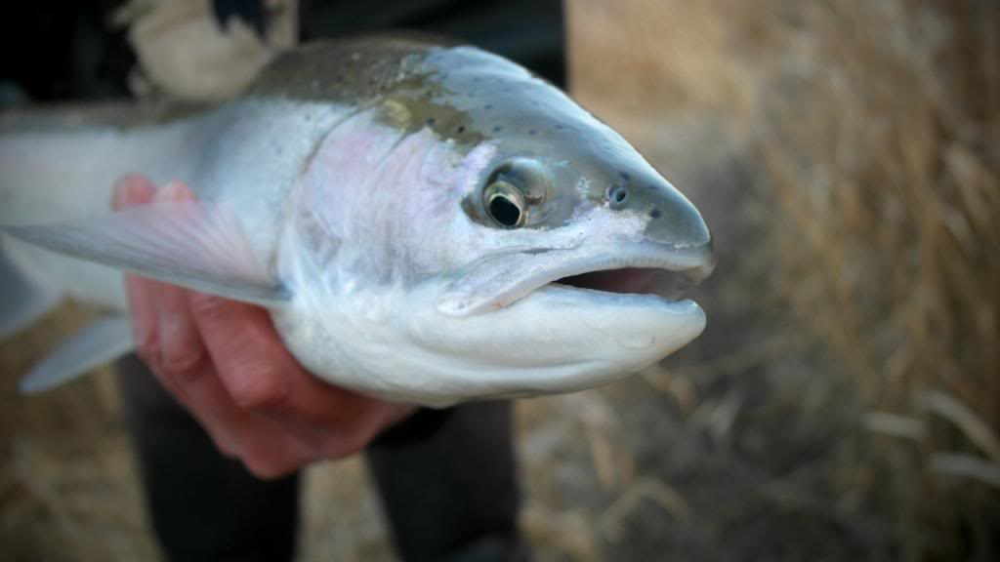

 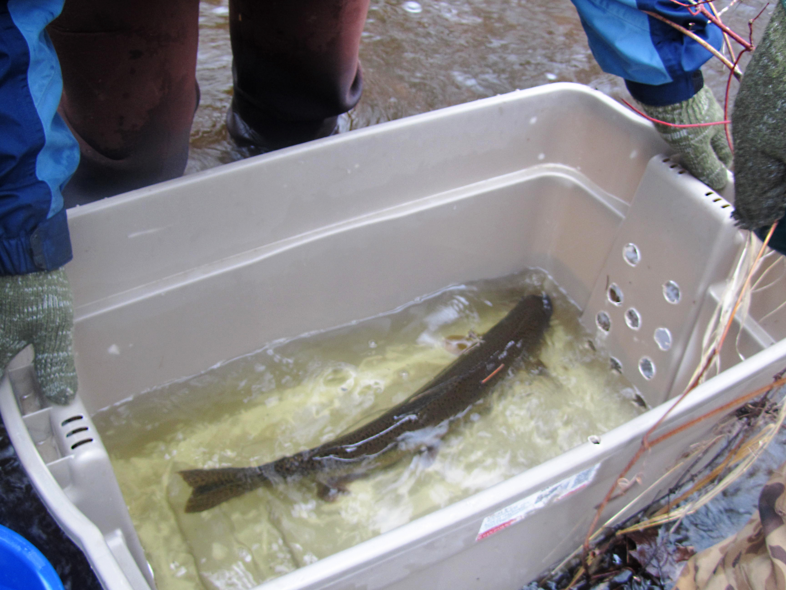
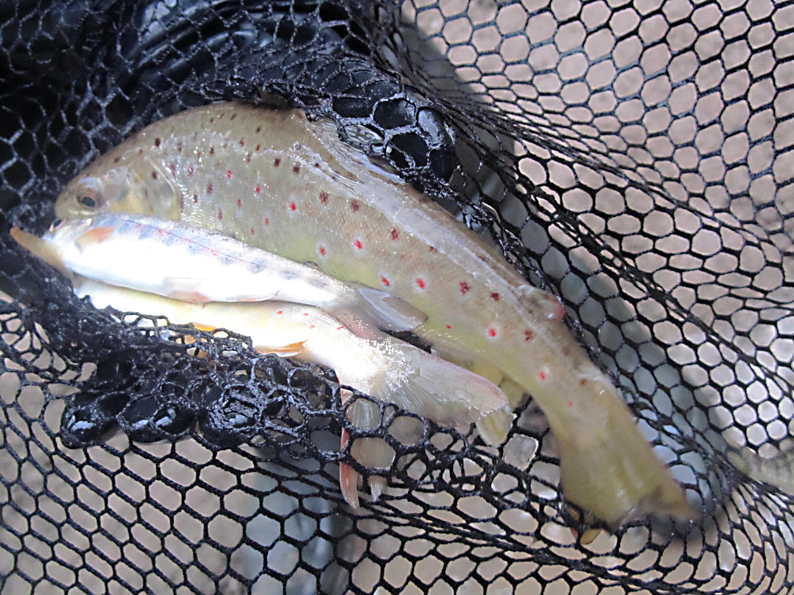
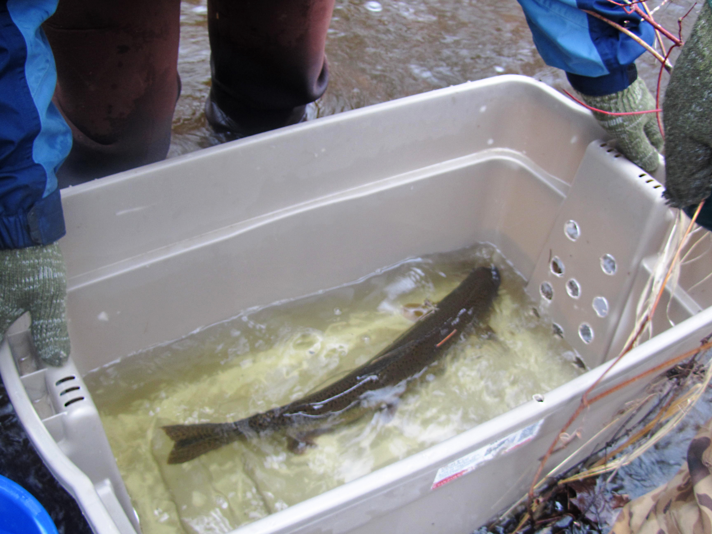
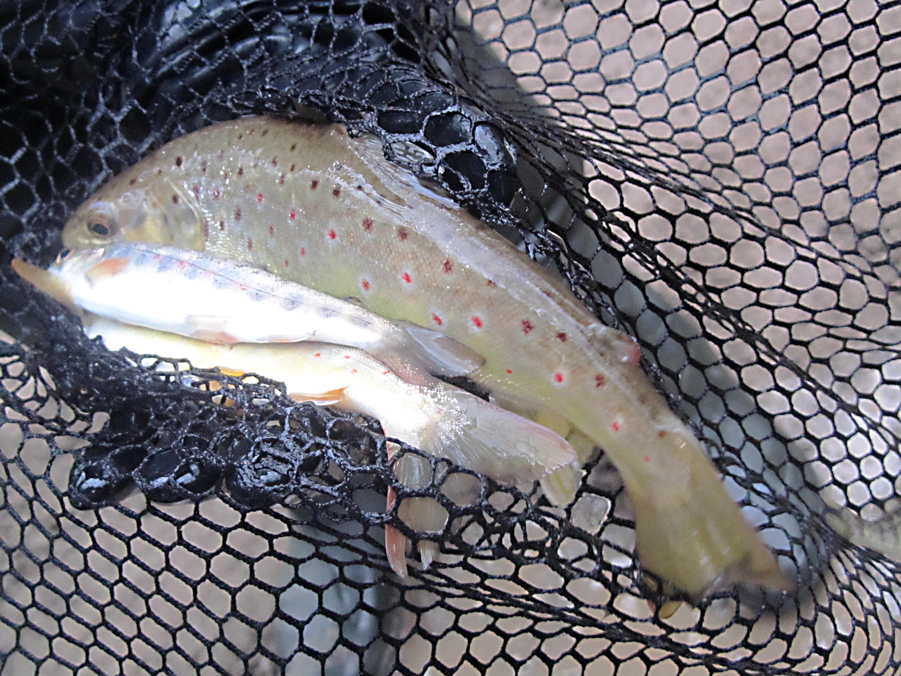

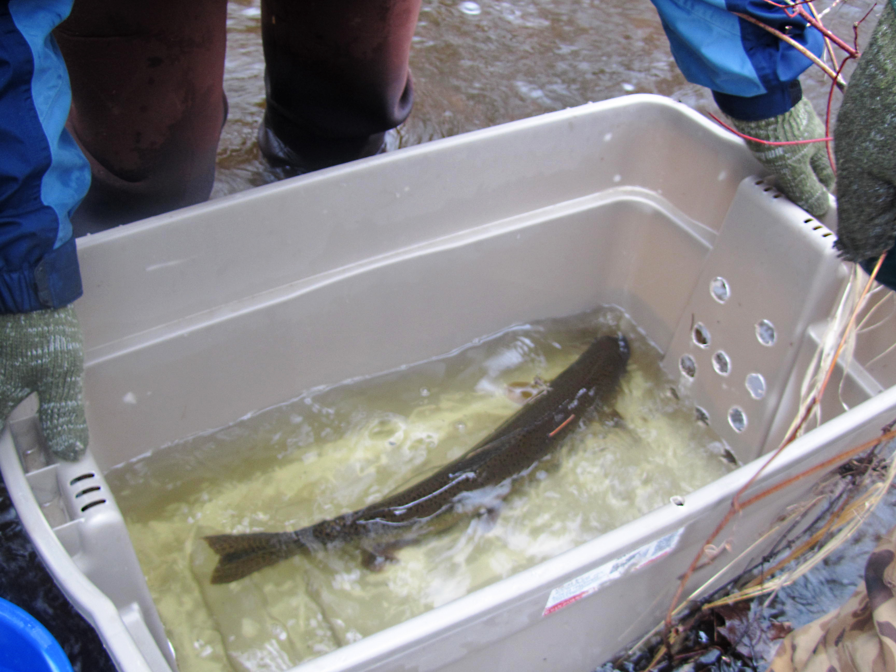
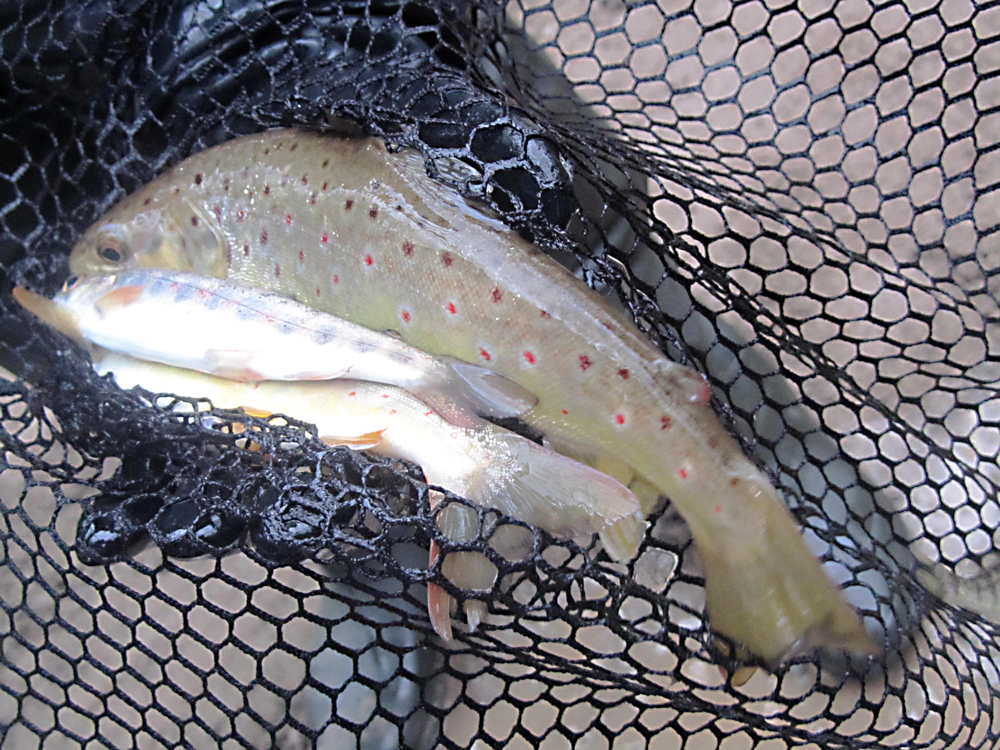
local supporters
LOCAL SUPPORTERS
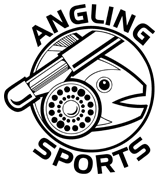